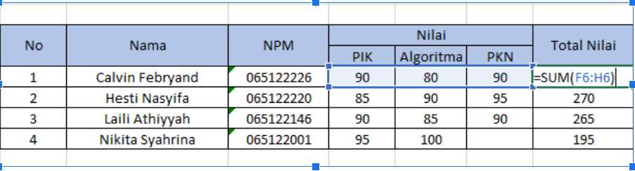
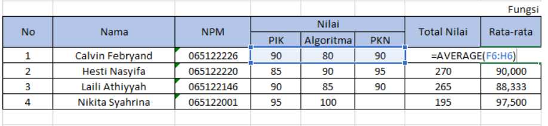
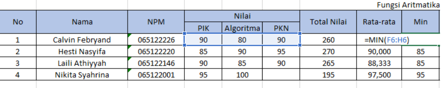
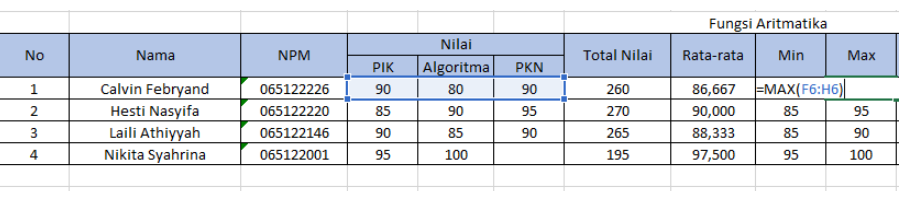
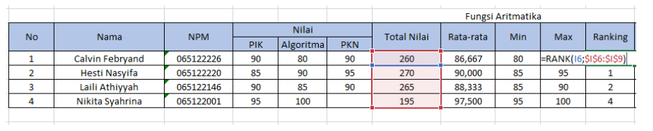
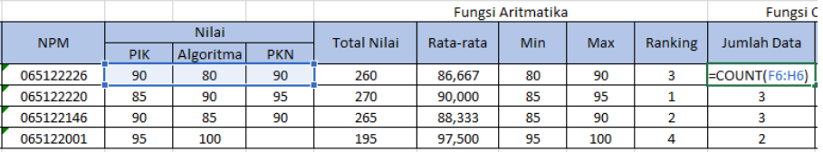
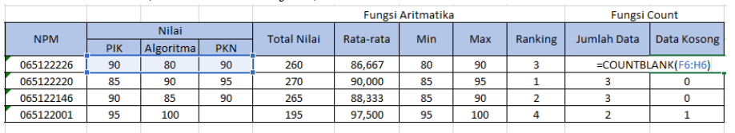

Microsoft Excel
ditulis oleh salsa-ade-nayla. pada 06 Desember 2023
Merupakan perangkat lunak pengolah angka. Biasanya digunakan untuk bekerja dengan daftar data, menghitung angka-angka, membuat laporan, diagram, grafik, dan sebagainya.
Fungsi Aritmatika
Aritmatika adalah bagian dari matematika yang mempelajari tentang operasi dasar bilangan (penjumlahan, pengurangan, perkalian, dan pembagian).
SUM
Sum digunakan untuk menjumlahkan nilai pada sel. Menggunakan rumus :
=SUM(Sel Asal : Sel Tujuan)
AVERAGE
Average digunakan untuk mencari nilai rata-rata sel. Mengunakan rumus :
=AVERAGE(Sel Asal : Sel Tujuan)
MIN
Min digunakan untuk mencari nilai terendah dari sel. Menggunakan rumus :
=MIN(Sel Asal : Sel Tujuan)
MAX
Max digunakan untuk mencari nilai tertinggi dari sel. Mengunakan rumus :
=MAX(Sel Asal : Sel Tujuan)
RANK
Rank digunakan untuk mencari peringkat melalui perbandingan nilai masing-masing sel. *Catatan : Klik Fn+F4 atau F4 untuk mengunci nilai. Menggunakan rumus :
=RANK(Sel Asal : Sel Tujuan)
Fungsi Count
Count digunakan untuk menghitung jumlah banyaknya sel yang terisi data. Menggunakan rumus :
=COUNT(Sel Asal : Sel Tujuan)
COUNTBLANK
CountBlank digunakan untuk menghitung jumlah banyaknya sel yang tidak terisi data. Menggunakan rumus :
=COUNTBLANK(Sel Asal : Sel Tujuan)
Fungsi IF
Fungsi IF akan menghasilkan sebuah nilai tertentu jika kondisi yang ditentukan terpenuhi dan akan menghasilkan nilai lainnya jika kondisi tidak terpenuhi.
IF Tunggal
=IF(TesLogika;KondisiTerpenuhi;KondisiTidakTerpenuhi)

IF Ganda (Bertingkat)
=IF(TesLogika1;KondisiTerpenuhi1;IF(TesLogika2;KondisiTerpenuhi2;KondisiTidakTerpenuhi))

IF AND
=IF(AND(Uji_Logika1;Uji_Logika2;...);KondisiTerpenuhi;KondisiTidakTerpenuhi)

IF OR
=IF(OR(Uji_Logika1;Uji_Logika2;...);KondisiTerpenuhi;KondisiTidakTerpenuhi)